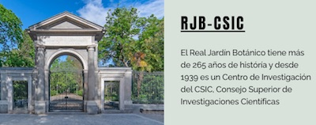
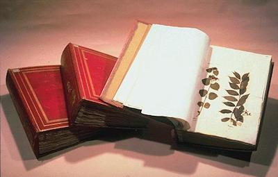
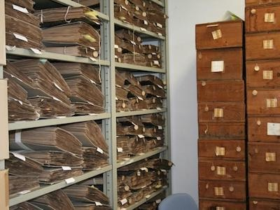

Imagen
de la web del Real Jardín Botánico
de Madrid

Este es
el herbario más antiguo que se conoce,
el de Andrea Cesalpino, director del Jardín
Botánico de Pisa en el s. XVI.
Data de 1563. Su maestro, Luca Guini, se
cree
que fue el inventor de la técnica del herbario,
pero el suyo no se conserva.

Herbarios
antiguos de la Universidad de Sevilla.
Finales del s. XVII hasta principios del s. XX.
Armario
compacto principal del herbario SEV,
con 13 grandes estanterías de 10 m de largo
que se mueven suavemente sobre rodamientos.
|
- A partir del s. XVI, con
los viajes transoceánicos y las relaciones
comerciales entre Europa y otros continentes,
se fueron acumulando muestras de plantas y
animales.
|
- Durante
los siglos XVI y XVII había
jardines de plantas medicinales.
Algunos de ellos se transformaron en
verdaderos jardines botánicos cuando su
finalidad se amplió a otras aplicaciones de
las plantas y, sobre todo, a su estudio
científico.
|
- En el s.
XIX se crearon museos de Historia
Natural, jardines zoológicos y jardines
botánicos en los principales países de
Europa.
|
- Los jardines botánicos tenían la
misión de estudiar las especies exóticas y aclimatarlas
para la agricultura o la jardinería.
|
- Algunos jardines botánicos y
museos de Historia Natural fundaron los herbarios
modernos, colecciones de plantas secas,
debidamente etiquetadas, que constituyen una
especie de librería de la vida vegetal.
|
- Los herbarios son una de
las bases del método científico de la Botánica
Sistemática, pues en ellos se conservan las
pruebas de los estudios botánicos.
|
- Los
jardines botánicos trabajan para la
conservación de la flora amenazada ex
situ.
|
- La conservación ex situ
se realiza mediante el mantenimiento de
plantas vivas y mediante la conservación de
sus diásporas en un banco de germoplasta,
donde se almacenan semillas, bulbos,
tubérculos, raíces o esporas.
|
- Por su parte, los herbarios
proporcionan el conocimiento previo necesario
para la conservación in situ, pues en
ellos se puede comprobar la distribución
y la variabilidad de las especies.
|
- La conservación in situ
requiere de la elaboración de un plan
técnico de conservación que identifique los
factores de amenaza de las poblaciones
conocidas y diseñe las medidas de protección
necesarias.
|
|
- Hoy día, es posible estudiar el ADN
cloroplástico conservado en plantas
secas, no solo las más recientes, sino también
las recolectadas hace 200 años, algo
impensable hace una década. El material de los
herbarios es un tesoro insustituible, pues
muchas poblaciones de plantas representadas en
ellos ya no existen; además, actualmente es
muy difícil, o imposible volver a explorar
regiones en guerra o con acceso restringido a
los extranjeros.
|
- El Herbario de la Universidad
de Sevilla (SEV) conserva varias
colecciones antiguas y una colección moderna,
iniciada en 1968 y que cuanta ya con
unos 300.000 ejemplares (pliegos). En
este herbario se conservan los tipos de las
especies descritas por muchos investigadores y
el material de numerosas tesis, libros y
publicaciones científicas.
|
- En algunos herbarios (como en SEV)
existen también colecciones de muestras secas
en gel de sílice, recolectadas expresamente
para la extracción de ADN: bancos de ADN.
|
- Los investigadores interesados
no necesitan venir a España para recolectar
especies raras o endémicas.
|
|